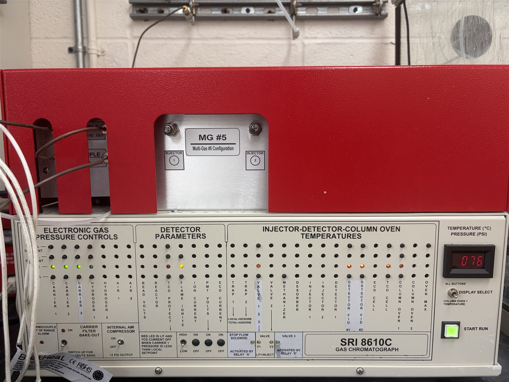
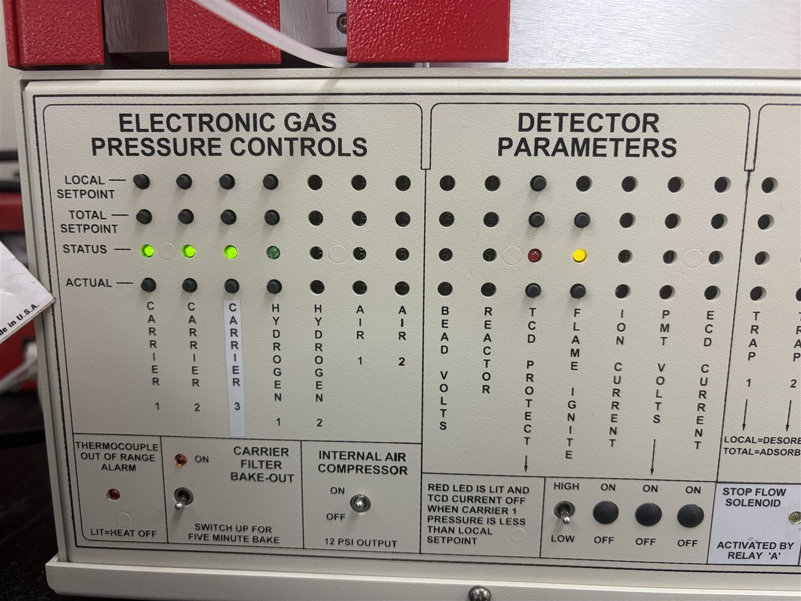
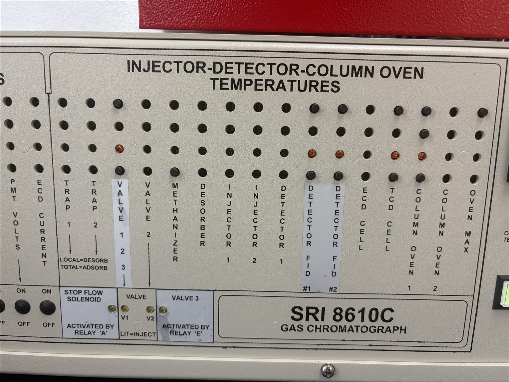
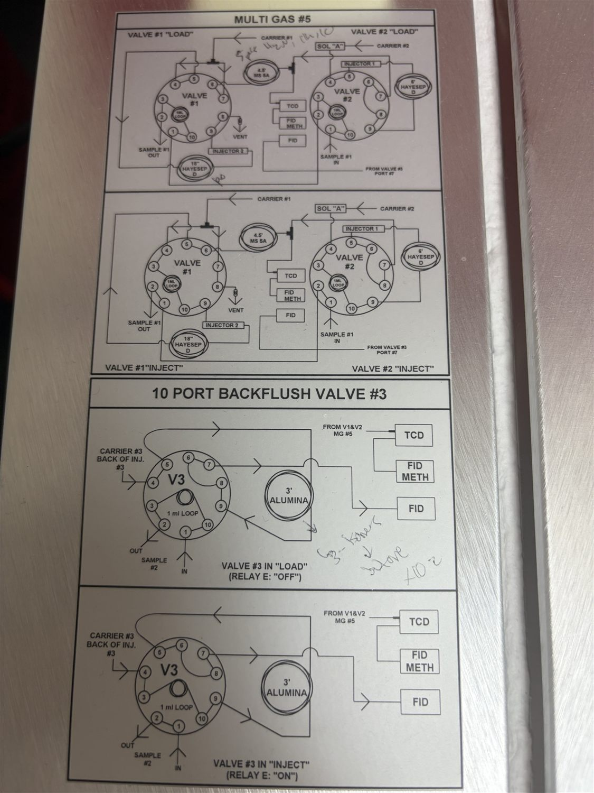

SRI 8610C GC & PeakSimple — Student Guide
Everything you need to run the lab's reverse water-gas shift (RWGS) GC — split into focused sections so you can jump straight to what you need.
Reference: Printable cheat sheet · Glossary · Your Lab's Settings · Sources
1Know Your Instrument
Before touching any software, it helps to picture what the GC actually does. A gas chromatograph (GC) takes a tiny, fixed-size puff of your gas mixture, pushes it through long thin tubes called columns, and separates the mixture into its individual gases. Each gas exits the column at its own characteristic time (its retention time) and passes a detector that produces a peak. Bigger peak = more of that gas. PeakSimple is the program that records those peaks and turns them into numbers.
The four parts that matter to you
| Part | What it does (plain English) |
|---|---|
| Gas-sampling valve (GSV) (two on this GC) | Instead of injecting liquid with a syringe, a fixed-volume sample loop fills with gas from your reactor stream. Rotating the valve injects that exact volume onto the column. It's automatic and extremely repeatable. The valve is moved by a relay in PeakSimple: relay OFF = LOAD (loop filling), relay ON = INJECT (loop swept onto the column). |
| TCD detector | Thermal Conductivity Detector. A near-universal detector that responds to a gas by how its thermal conductivity differs from the carrier. On this GC it measures the fixed/permanent gases: O₂, N₂, Ar, CO, CH₄, CO₂. Best for higher concentrations (~hundreds of ppm and up); non-destructive. Important limitation: a TCD cannot detect a gas identical to its carrier — because the carrier here is H₂, H₂ is invisible on the TCD. |
| FID detector | Flame Ionization Detector. Burns hydrocarbons in a tiny hydrogen/air flame and counts the ions. Extremely sensitive to hydrocarbons (CH₄, C₂H₆, C₂H₄ … up to C₅) down to low ppm. By itself it cannot see CO or CO₂. |
| Methanizer | A small heated nickel catalyst with hydrogen, sitting just before the FID. It converts CO and CO₂ into methane on the fly, so the FID can measure CO and CO₂ at low ppm — far more sensitive than the TCD. This is the key to seeing trace CO product and leftover CO₂ in RWGS. |
The front panel — reading zones & actuals
The instrument's front panel is a status display: it shows the live value (the ACTUAL) of every heated zone, gas pressure and detector against its SETPOINT. You set the numbers themselves in PeakSimple ( and the temperature/EPC dialogs); the panel is where you confirm the instrument actually reached them before a run.

Each column of four LEDs corresponds to one zone. Reading top to bottom: LOCAL SETPOINT and TOTAL SETPOINT (the target), STATUS (a green LED = that zone is on and stable; red/amber = heating, fault, or off), and ACTUAL (the live value). To read a number, press DISPLAY SELECT until the column you want is active — the red readout then shows that zone's value.


Valve plumbing & the relay map
The gas-sampling and backflush valves are rotary valves whose port plumbing is shown on the configuration sheet taped to the GC. You rarely need the full schematic, but it's the reference for which column and detector each valve position connects.

2Your Lab's Settings fill in once, then print
These numbers are specific to your instrument and RWGS method. They are not in any generic manual — get them from your PI, the method sheet taped to the GC, or a senior student. Click any purple field to type your value. Then everyone uses the same settings.
| Carrier gas & EPC pressure | Hydrogen (H₂) @ 20psi — typical default, verify on the GC display / Edit>Overall |
|---|---|
| Column oven program | Isothermal (no ramp), 75°C, held 11 min — confirmed in PeakSimple Channel 1 temp control |
| Valve oven temperature | 80°C — typical default, verify on the GC zone display |
| TCD temperature | 150°C — typical default, verify on GC zone display |
| FID temperature | 250°C — typical default, verify on GC zone display |
| Methanizer temperature | 380°C — typical default, verify on GC zone display |
| FID H₂ & air flows | H₂ 25 · air 250mL/min — typical default, verify (set at install) |
| Gas-sampling-valve relay letter(s) | Relay G = sample inject; relay F = 2nd valve (panel map: V1=G, V2=F, V3=E — confirm on GC side panel) |
| Valve timing (min) | G inject 0.05 · G off 0.90 · F 5.50/10.50 |
| Total run time | 11 min (FID) · 21 min (TCD & methanizer) |
| Board type & COM/USB | Board 302, port USB — USB connection (per PeakSimple title bar); see Edit>Overall |
| Control file name(s) | DEFAULT.CON |
| Where data is saved | C:\PeakSimple\Data\… |
3Sources & Further Reading
This guide was built from SRI's own PeakSimple documentation and your instrument's configuration paperwork. For deeper detail, the original SRI documents are at srigc.com/public/documents-downloads:
- PeakSimple Basic Tutorial — launching, connecting, opening files, display/zoom, integration, calibration, export to Excel.
- PeakSimple Advanced Tutorial — full manual-integration toolbar, component tables, temperature programming, events, overlay/subtract, results log.
- PeakSimple Calibration Tutorial — single- and multi-level calibration curves, methods, ordering rules.
- Autosampler Queue — running sequences of control files, copies, Edit-all spreadsheet, recalibrate-at-level.
- Events — relays A–H, gas-sampling-valve LOAD/INJECT control, event timing, reset relays.
- 8610C Manual Parts 1–10 (hardware, detectors, valves, maintenance) — for instrument internals if you ever need them.
Tailored to the SRI 8610C Multiple Gas Analyzer (TCD + FID + Methanizer, two gas-sampling valves, MolSieve 5A / HayeSep D / Alumina columns) configured for the University of Rochester. Instrument-specific setpoints are intentionally left as editable fields for your lab to complete. When in doubt about a number, confirm with your PI before relying on it.
SRI 8610C GC + PeakSimple — Student User Guide · Porosoff Research Group, University of Rochester. Verify all setpoints against your instrument before running.
↑ back to top